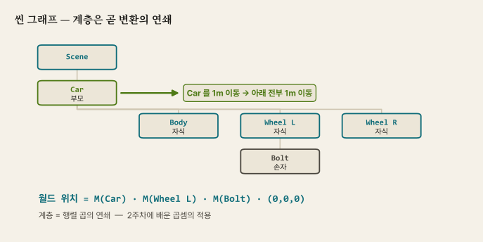
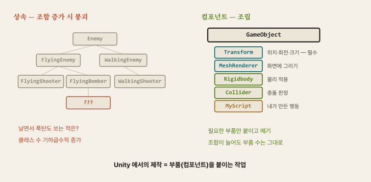
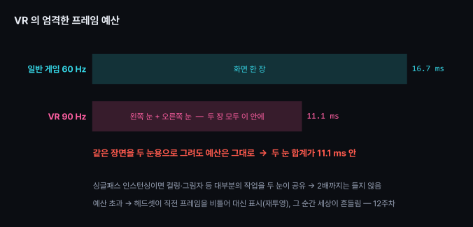

빈 게임오브젝트에 부품(컴포넌트)을 붙여 회전하는 큐브 조립 · 각 부품이 맡은 기능 설명 가능
2 함정
AI가 쓴 이동 코드에서 Time.deltaTime 누락 찾기 · 30fps / 120fps 측정으로 결함 증명 가능
3 VR
90Hz 헤드셋의 프레임 예산 11.1ms 직접 계산 · 프레임을 놓치면 멀미가 나는 이유 설명 가능
처음 보는 용어는 처음 나오는 슬라이드에서 바로 풀이 — 각 파트 시작에 용어 미리보기 수록
Part I · 60분
Unity의 기본 구조
게임오브젝트, 컴포넌트, 1초에 수십 번 반복되는 게임 루프
Part I 용어 미리보기
이번 파트 용어 미리보기
씬Scene
게임의 한 장면을 담은 파일 · 물체들이 놓이는 무대 하나
게임오브젝트GameObject
씬 안 모든 물체의 기본 틀 · 그 자체로는 기능 없는 빈 판
컴포넌트Component
게임오브젝트에 끼워 기능을 더하는 부품
트랜스폼Transform
위치·회전·크기를 담는 부품 · 모든 게임오브젝트에 기본 장착
스크립트Script (C#)
C# 언어로 내가 직접 만드는 행동 부품
프레임Frame
화면에 한 번 그려지는 정지 그림 한 장
fpsframes per second
1초에 그리는 프레임 수 · 60fps = 1초에 60장
deltaTimeTime.deltaTime
직전 프레임 한 장을 만드는 데 걸린 시간(초)
구조 · 1
씬 = 무대 하나
Unity 프로젝트 = 여러 개의 씬(Scene, 한 장면 파일)으로 구성
예 : 타이틀 화면, 1스테이지, 엔딩이 각각 하나의 씬
씬 안의 물체 목록 → Hierarchy 창(계층 창)
선택한 물체의 부품과 설정값 → Inspector 창(속성 창)
씬 = 연극의 한 막 무대 — 무대 위에 배우·소품·조명이 놓이듯 씬 위에 게임오브젝트가 놓임
Hierarchy = 출연진 명단, Inspector = 명단에서 고른 배우 한 명의 프로필 카드
구조 · 2
게임오브젝트 = 빈 레고 판
GameObject : 이름과 트랜스폼(위치·회전·크기)만 가진 빈 틀
그 자체로는 보이지도, 움직이지도 않음
화면에 보이게 하려면 → MeshRenderer(그리기 부품) 추가
중력으로 떨어지게 하려면 → Rigidbody(물리 부품) 추가
Unity에서의 제작 = 빈 판에 필요한 부품을 골라 끼우는 과정
기능은 판이 아니라 부품에서 나옴
게임오브젝트 = 빈 레고 판, 컴포넌트 = 판에 끼우는 레고 부품 — 바퀴를 끼우면 굴러가고 램프를 끼우면 빛남. 같은 판도 끼운 부품에 따라 자동차도, 집도 됨
디자인 툴로 치면 빈 레이어에 효과(그림자·테두리)를 얹는 방식과 같은 발상
구조 · 3
자주 쓰는 기본 부품
트랜스폼Transform
위치·회전·크기 · 모든 게임오브젝트에 반드시 1개, 뗄 수 없음
메시 렌더러MeshRenderer
모양 데이터(메시 : 삼각형을 이어 붙인 3D 모양)를 화면에 그리는 부품
리지드바디Rigidbody
질량·중력·힘을 받아 물리 법칙대로 움직이게 하는 부품
콜라이더Collider
부딪힘을 판정하는 보이지 않는 외곽선
내 스크립트MyScript.cs
내가 만든 행동 부품 · 예 : 회전, 점프
예 : 떨어져 튕기는 공 = 빈 게임오브젝트 + MeshRenderer(보임) + SphereCollider(부딪힘) + Rigidbody(떨어짐)
부품 하나를 빼면 그 기능만 사라짐 — Collider 를 빼면 바닥을 뚫고 계속 떨어짐
구조 · 4
씬 그래프 — 물체 사이의 부모·자식 관계
Hierarchy 창에서 물체를 다른 물체 위로 끌어다 놓으면 → 부모·자식 관계 형성
이 관계 전체를 나무 모양으로 그린 것 = 씬 그래프(Scene Graph)
자식의 위치 = 부모 기준의 상대 위치로 저장 → 부모가 움직이면 자식도 함께 이동
로컬 좌표Local
부모 기준 위치 · Inspector 에 표시되는 값
월드 좌표World
씬 전체 기준의 절대 위치 · 부모들의 변환을 차례로 곱해 계산 (2주차 행렬 곱)
쟁반 위의 컵 — 쟁반을 들고 걸으면 컵은 스스로 움직이지 않아도 함께 이동. 컵의 위치는 «쟁반 왼쪽 끝에서 10cm» 처럼 쟁반 기준으로 기억
구조 · 4 도해
쟁반과 컵 — 로컬은 그대로, 월드는 바뀜
구조 · 5
씬 그래프 — 2주차 행렬 곱의 연쇄

구조 · 6
상속과 조합 — 기능을 늘리는 두 가지 방법
클래스Class
물체의 설계도 · 어떤 데이터와 동작을 가지는지 정의
상속Inheritance
기존 설계도를 물려받아 기능을 덧붙인 새 설계도 작성 (FlyingEnemy ← Enemy)
조합Composition
설계도를 늘리지 않고 부품을 골라 붙여 기능 구성
이동 방식 3가지(걷기·날기·헤엄) × 공격 방식 4가지 → 상속으로는 설계도 최대 12개, 조합으로는 부품 7개(3 + 4)로 해결
상속 = 완제품 장난감 라인업 — «날면서 폭탄 쏘는 로봇» 이 필요하면 신상품을 따로 출시해야 함
조합 = 레고 — 날개 부품과 폭탄 부품을 꺼내 끼우면 끝
구조 · 7 ★
상속 대신 조합

구조 · 8
내 코드도 부품 — C# 스크립트
using UnityEngine;
public class Spinner : MonoBehaviour // ← 이 상속 = "부품 자격증"
{
public float speed = 45f; // ← Inspector 에 입력칸으로 노출
void Start() { } // 씬에 등장한 뒤 첫 프레임 직전에 한 번
void Update() { } // 매 프레임 한 번
}
MonoBehaviour 상속 → 게임오브젝트에 붙일 수 있는 부품이 됨 public 변수 → Inspector 에 입력칸으로 노출 → 코드 수정 없이 값 조절 가능 Start · Update 를 부르는 주체 = Unity — 내 코드에서 직접 호출하지 않음
구조 · 9
Unity 가 내 코드를 부르는 방식
MonoBehaviourMonoBehaviour
Unity 가 제공하는 «부품 자격» 클래스 · 이를 상속해야 게임오브젝트에 붙일 수 있음
이벤트 함수Event Function
정해진 이름으로 만들어 두면 Unity 가 알맞은 때에 자동 호출하는 함수 (Awake, Start, Update …)
StartStart()
오브젝트가 활성화된 뒤 첫 Update 직전에 1회
UpdateUpdate()
매 프레임 1회
연극 배우와 무대감독 — 배우(내 스크립트)는 스스로 무대에 나가지 않고 무대감독(Unity)의 큐 신호에 맞춰 연기. Start = 첫 등장 큐, Update = 매 장면 반복되는 큐
큐 이름이 틀리면(update 처럼 소문자) 신호가 오지 않아 오류 없이 아무 일도 안 일어남
루프 · 1
게임 = 멈추지 않는 반복(루프)
while (게임 실행 중) {
입력 읽기
세상 상태 갱신
한 장 그리기
}
루프 한 바퀴 = 그림 한 장 = 한 프레임
1초에 도는 바퀴 수 = fps(초당 프레임 수)
PC·장면마다 다름 · 보통 30~144, 흔한 기준 60
Update() = 루프 한 바퀴마다 끼워 넣는 내 코드
Update 안이 무거움 → 한 바퀴가 길어짐 → fps 하락 → 게임 전체가 버벅임
게임 루프 = 플립북 — 한 장씩 그려 빠르게 넘기면 움직임으로 보임 · 1초에 넘기는 장 수 = fps
Quest 계열 헤드셋 : 약 72 · 90 · 120Hz 중 선택 — 기기·앱 설정마다 다름
이 시간 안에 게임 로직 + 물리 + 두 눈 시점의 렌더링 전부 완료 필요
정시 출발 버스 — 버스(화면 교체)는 11.1ms 마다 칼같이 출발. 그때까지 짐(로직·물리·그림)을 다 싣지 못하면 버스는 새 짐 없이 출발 → 프레임 드랍
지각 · 7
VR의 엄격한 프레임 예산

지각 · 8
프레임을 놓쳤을 때
일반 게임
그림이 늦음 → 화면이 한 장 늦게 바뀜
잠깐 끊김 — 불편한 수준
VR
헤드셋은 대기하지 않음 → 직전 프레임을 지금 머리 방향에 맞춰 비틀어 표시(리프로젝션)
움직이는 물체·몸 이동은 못 맞춤 → 흔들림 · 잔상
리프로젝션 = 최후의 안전장치, 성능 문제의 해결책 아님
자주 발생 시 사용자는 원인을 모른 채 "이 게임 하면 어지럽다" 는 반응
플립북에서 한 장을 못 그렸을 때 앞 장을 살짝 기울여 끼워 넣는 땜질 — 자주 하면 움직임이 어색해짐
지각 질문의 답
끊김 : 게임은 짜증, VR은 멀미 — 왜?
모니터 게임 : 화면은 내 몸과 따로 있는 창문 → 끊겨도 눈만 불편, 몸의 균형 감각과는 무관
VR : 화면이 곧 내 시야 전체 → 고개를 돌릴 때 전정계는 «돌았다», 눈은 «아직 안 돌았다»
두 감각의 어긋남 = 2주차 감각 충돌 → 메스꺼움 · 어지럼
결론 : VR 에서 프레임 시간 = 화질 문제가 아닌 몸의 편안함 문제
→ 프레임 예산 지키기 = VR 설계 원칙 1번
지각 · 9
설계 원칙
VR의 Update() :
11.1ms 예산 안에서 실행
11.1ms 안에 게임 로직 · 물리 · 두 눈 시점의 렌더링 전부 포함
Update 안의 Find 하나, 큰 목록 정렬 한 번 → 예산 초과 → 프레임 드랍
«일단 동작하게 만들고 나중에 최적화» 방식이 VR에서 통하기 어려운 이유 → 처음부터 예산을 의식한 설계 필요
Part III · 50분
프롬프트 실습
이번 주 핵심 : 검증 조건 작성법
실습 · 1
명세의 네 칸
[목표]
무엇을 만드는가
[제약]
무엇을 하지 말아야 하는가
[검증 조건]
어떻게 확인할 것인가
[비목표]
무엇은 만들지 않는가
이번 주 집중 : 세 번째 칸
지난주 함정(짐벌락) : 화면에서 확인 가능
이번 주 함정(deltaTime) : 화면에서 확인 불가
보이지 않는 결함 → 측정 방법을 미리 정하지 않으면 발견 불가
실습 · 2
보이지 않는 결함의 측정
// 프레임률을 강제로 낮춰서 같은 코드를 두 번 실행
void Awake() {
QualitySettings.vSyncCount = 0; // vsync 끄기 — 꺼야 아래 설정이 적용
Application.targetFrameRate = 30; // 그 다음 120 으로 바꿔 한 번 더
}
// 10초 뒤 위치를 콘솔에 출력해 비교
void Start() { Invoke(nameof(Report), 10f); }
void Report() { Debug.Log($"{Application.targetFrameRate}fps → {transform.position}"); }
30fps 와 120fps 에서 10초 뒤 위치 비교 → 같으면 통과, 다르면 deltaTime 누락 → 이것이 검증 조건 vSyncCount 를 0 으로 두지 않으면 targetFrameRate(목표 프레임률) 무시 (PC 기준) — 자주 하는 실수
실습 · 3
오늘의 실습 — 50분
#
실습
확인할 개념
1
AI에게 검증 조건 없이 회전·이동 스크립트 요청 · 첫 응답의 deltaTime 포함 여부 확인
명세의 빈틈
2
위 측정 코드로 30fps / 120fps 비교, 결함 확인
보이지 않는 결함의 측정
3
검증 조건을 넣어 다시 요청, 응답 차이 비교
명세에 따른 결과 변화
4
공을 Update 와 FixedUpdate 에서 각각 밀어 차이 비교
고정 타임스텝
5
카메라 추적을 Update 와 LateUpdate 양쪽에 넣어 떨림 재현 (확장)
실행 순서
1~4 필수, 5 확장 · 제출물 없음, 수업 안에서 완료
실습 · 4
이번 주 명세 예시
[목표]
큐브를 월드 Z축 방향으로 초당 3m 등속 이동시킨다.
[제약]
- 프레임률과 무관하게 같은 속도일 것
- Rigidbody 는 쓰지 않는다 (Transform 직접 이동)
[검증 조건]
- vSyncCount=0 으로 두고 targetFrameRate 를 30 과 120 으로 바꿔
각각 10초 뒤 position.z 를 로그로 찍었을 때
두 값의 차이가 0.1m 이내일 것
[비목표]
- 입력 처리, 충돌, UI 는 만들지 말 것
[검증 조건]에 숫자와 방법 포함
«잘 동작할 것» 은 검증 조건으로 부적합 — 무엇을 재서 몇이면 통과인지 불분명